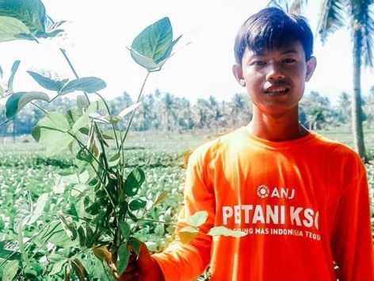

ARTIKEL
Masa Depan Petani Muda Indonesia dan Regenerasi Petani

Danu Wijaya (19) memilih untuk menekuni profesi petani edamame di Jember, Jawa Timur. Pilihan profesi Danu terbilang tak biasa untuk anak muda seusianya, tetapi Danu bertekad menjadi petani edamame sukses. Saat ini, Danu tergabung dalam petani muda binaan PT Gading Mas Indonesia Teguh (GMIT) "Modal yang dibutuhkan untuk jadi petani adalah kemauan untuk belajar dan berusaha, serta dukungan orang tua adalah hal yang penting untuk saya," kata Danu dihubungi Kompas.com, Rabu (22/9/2021). Danu menyebutkan pilihan bergabung dengan perusahaan saat mulai bercocok tanam, memberi ia keuntungan, khususnya dalam proses belajar. "Menurut saya, akan lebih baik bagi para petani muda untuk bergabung kerja sama dengan perusahaan dibandingkan mengelola sendiri," ujar Danu. Danu mengaku tidak perlu menyiapkan modal lahan sendiri untuk menanam edamame, yang tentunya butuh modal yang banyak. Selain itu, ia mengatakan sudah ada kepastian pasar dan penjualan hasil panen yang terjamin ketika bergabung dengan perusahaan. Danu adalah potret petani muda yang sedang belajar dan kian langka di kalangan generasi muda. Menurut Guru Besar Ilmu Ekonomi Institut Pertanian Bogor (IPB), Prof Dr Muhammad Firdaus, saat ini Indonesia hanya memiliki tujuh hingga delapan persen petani muda. "Kalau definisi muda menurut standar internasional itu di bawah 40 tahun. Kalau di bawah 40 tahun itu ya kurang dari 10 persen, paling sekitar tujuh sampai delapan persen," tutur Firdaus dihubungi Kompas.com, Kamis (21/9/2021). Firdaus mengatakan bahwa total keseluruhan petani di Indonesia adalah 30 juta dengan rata-rata usia petani 50-60 tahun. Persentase petani muda Indonesia dengan jumlah sebesar 2,5 juta itu terbilang rendah.
Regenerasi Petani Indonesia
Firdaus menyampaikan, jumlah petani muda yang rendah bukan disebabkan karena profesi petani tidak menarik. Melainkan, minimnya daya serap pekerja di bidang pertanian. Alasan lain mengapa angka petani muda Indonesia masih rendah adalah karena tingginya risiko yang harus dihadapi oleh petani. Petani Indonesia harus menghadapi beberapa risiko, seperti harga pasar jatuh, serangan hama, hingga hasil tani yang tidak sesuai harapan.